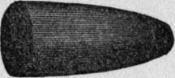
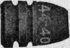

Chapter I. Rifles And Ammunition
Description
This section is from the "" book, by .
Chapter I. Rifles And Ammunition
THE shooting merits of a rifle are rated by the accuracy, velocity, and force with which it delivers bullets. I use the word force, for brevity's sake, in an arbitrary sense, to include energy of impact, penetration, and shock. Some rifles are accurate, but drive the bullets so slowly that they describe a high curve, so that they will over-shoot or under-shoot beyond, say, fifty yards, unless the distance is closely estimated and proper allowance is made in aiming. Some, shoot swift and hard, but drive their bullets now high, now low, now right, now left, and no man can tell just where they will hit. Others shoot swift, and hard, and true: they can be relied upon to hit " where they are held," without allowing for distance, up to, say, one hundred and fifty yards. When all three merits are combined in the same gun we have a weapon of high ballistic efficiency—an " old reliable " that a man may well be proud of, I have spoken in hunters' terms and as though it were the gun alone that did the work. But the degree of accuracy, velocity, and force with which a rifle shoots is really determined not so much by the weapon itself as by the charge with which it is loaded. If a novice should ask " How straight and how hard does a Winchester rifle shoot? " (or a Remington, or any other) nobody could give a direct answer; for it depends on what cartridge is used. If, on the other hand, he should ask " How straight and how hard does a .25-35 Winchester cartridge shoot?" (or any other) we could answer definitely; for it will give about the same results in any standard arm that is made to use it.
Of course, the precision with which a bullet starts on its errand is governed largely by the design, material, and mechanical perfection of the gun barrel. So, too, velocity of bullet depends somewhat upon length of barrel. But the common experience of gunmakers has so nearly standardized these matters that we need not consider them for the present.
The cartridge determines the kind of work that a rifle can do. It is a law of scientific gunnery to design first a cartridge, then a gun to handle it. And this is done in practical gunmaking whenever an arm of superior ballistics is produced. On the contrary, whenever a charge is ill-balanced or a bullet malformed, for the sake of fitting the cartridge to a particular breech mechanism, bad shooting is bound to result.
This matter is so important, yet so commonly overlooked, that I may be allowed a little space to illustrate and emphasize it:
In the half-century preceding our Civil War the muzzle-loader reached its highest development. After infinitely varied experiments, American riflemen discovered a peculiar bullet called the "sugar loaf55 (fig. 1) that outclassed all others in ballistic merit. Its length was a little less than twice its own caliber. Its distinguishing feature was an extremely slow taper from point to base, the bearing or cylindrical part being so short that this bullet could only be loaded by using a false muzzle to start it. Except for a slightly blunted tip, it had fine lines, like a boat built for high speed. It flew with extreme accuracy up to five hundred yards, and with a lower curve or trajectory than any other form of conical ball.
Figure 1.
With such bullets a rifle by Morgan James made a score of twenty-five consecutive shots, at two hundred and twenty yards, with average deviation of 1.4 inch; also ten shots, same distance, average deviation .8 inch, measuring from center of bullet hole to center of group (targets published in Atlantic Monthly, October, 1859). The bullet here illustrated was used, in a .42-130-270 muzzle-loader, in the Forest and Stream trajectory test at Creedmoor in 1885, and made a lower curve than any American or foreign breechloader of its day (height of trajectory 6.4 inches midway over the two hundred yard range). We may say that this or a similar charge gave the highest ballistic efficiency—the best combination of accuracy, velocity, and force—that ever was attained with black gunpowder within sporting ranges.
When breech-loader^ were introduced the sugar-loaf bullet could not be used in them, owing to its short bearing. Their mechanism was so weak, and the shells were so weak, that breech pressure had to be kept down to a low figure 40-200. The accuracy of such a charge is far inferior to the one previously mentioned. Its trajectory is so high (sixteen inches midway over the two hundred yard range) that shooting it beyond one hundred yards is mostly guesswork, and seldom effective. And yet more of this ammunition, probably, was sold in America than any other that has been used on big game, and more game has been killed with it than with any other. It came into use at the right time, when an army of hunters, many of them ex-soldiers, advanced into the West, where game was wonderfully plentiful. These cartridges were cheap, and they could be bought at any frontier post. Game was easily approached, in those days, and sportsmanship.
Figure 2.
This could only be done by using a small charge of powder and a light, short bullet. Still, the bullet had to have considerable bearing, in order to start straight.
This meant a bluff shoulder, like the bow of a canal boat, and consequent low speed. Such a bullet is illustrated in fig. 2, the well known .44had no more ethics than timber cutting—nobody cared how many broken-legged or gut-shot animals crawled off to fester miserably; in a thicket and die by slow torture.
So it came to pass that the record for American game shooting was won by as poor a cartridge as ever was forced into an arbitrary shape. It should be noted, in this case, that the bullet is of only lJ/£ calibers length, cylindrical throughout half its length, and very blunt. Such a missile will fly straight enough to satisfy average men, up to one hundred and fifty yards, if started at very slow speed (standard muzzle velocity 1,300 feet a second). If driven by a strong charge of powder it would meet excessive air resistance, would waste energy like a bluff-bowed boat driven by powerful engines, would " corkscrew " in its flight, and soon would go staggering like a ship without a rudder.
Continue to: